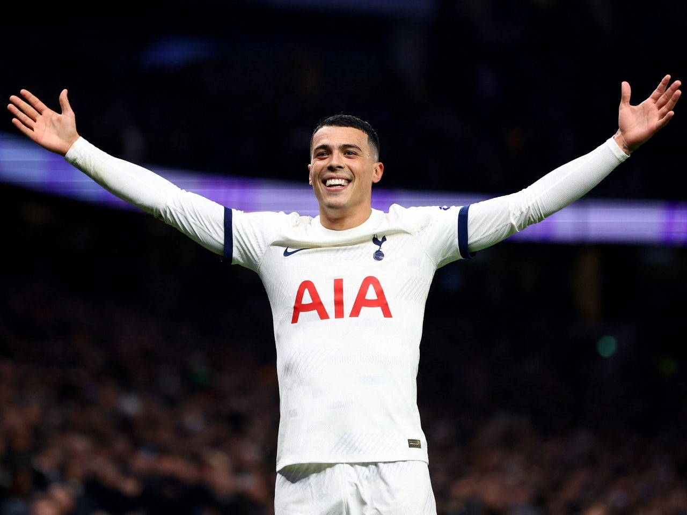

Home Page
Statistics
Soccer Videos
Premier League
Standings
- Manchester City 91Pts
- Arsenal 89Pts
- Liverpool 82Pts
- Aston Villa 68Pts
- Tottenham 66Pts
- Chelsea 63Pts
- Newcastle 60Pts
- Man United 60Pts
- West Ham 52Pts
- Crystal Palace 49Pts
- Brighton 48Pts
- Bournemouth 48Pts
- Fulham 47Pts
- Wolves 46Pts
- Everton 40Pts
- Brentford 39Pts
- Nottingham Forest 32Pts
- Luton Town 26Pts
- Burnley 24Pts
- Sheffield United 16Pts
Qualifications
🟩Champions League
🟧Europa League
🟦Didn't Qualify
🟥Relagated
